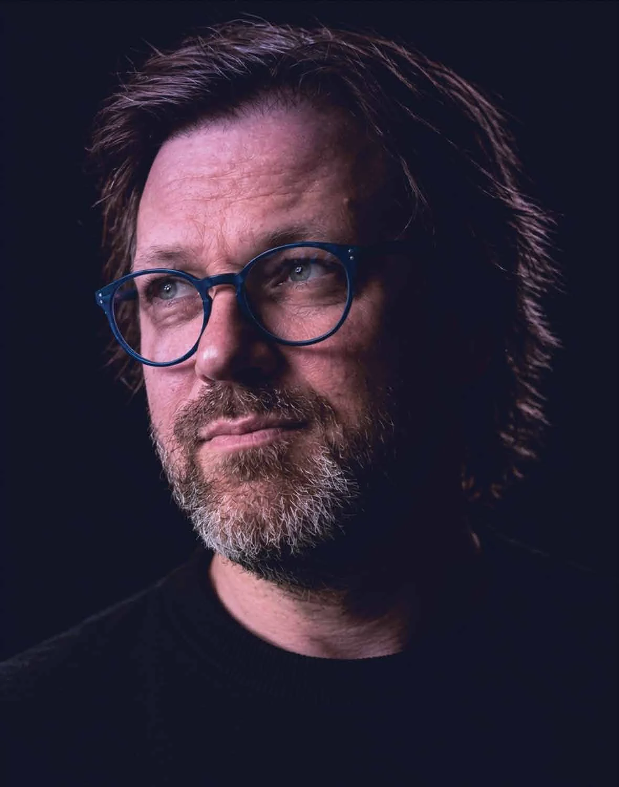
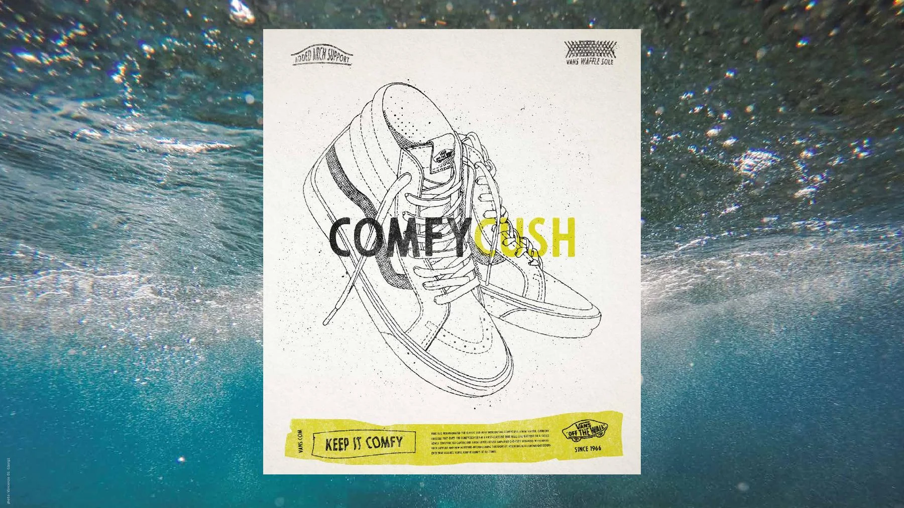
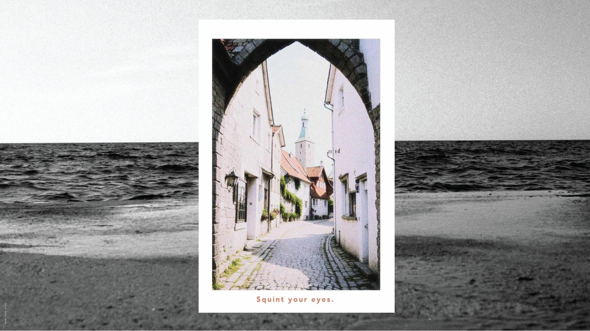

Art direction. Design. A healthy disregard for ordinary.
Rebellious
design
for good.
Good ideas don't sit still.
Neither do I.
01 / A selection, not a limitation
Different disciplines. Same curiosity.
Selected work.
12 projects
Floyd Paul / The person behind the pixels02 / A little more about me
Curiosity
doesn't do
job titles.
I grew up in Cape Town, where the wind blows hard enough to fill your mouth with salt. Somewhere between the sea, street art and art school, I fell in love with making things.
More than twenty years later, that hasn't really changed.
Branding, publishing, illustration, photography, motion, 3D and digital design. I've never been particularly interested in staying inside one discipline. These days I'm just as happy experimenting with AI and 3D printing as I am getting ink on my hands.
Made of Cape Town.
At home on Gotland, Sweden.
Off the clock. On the mind.
Illustration / Experiments / Visual play
Room to play.


03 / Good things start with a conversation